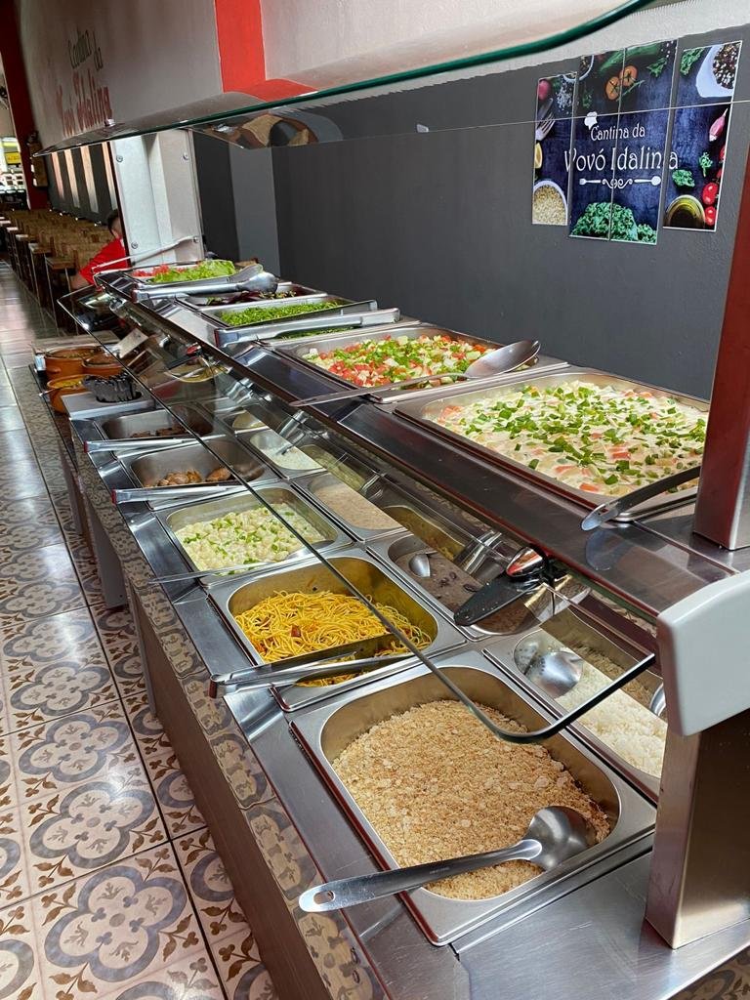

Venha sentir o verdadeiro sabor da comida caseira!

Estamos localizados em Siqueira Campos no Paraná,
mais precisamente na rua Quintino Bocaiuva, 1608-1, Centro.
Nossa comida de Vó é caseira e livre de qualquer tipo de tempero industrial.
Prezamos pela qualidade de nosso alimento e satisfação de nossos clientes.